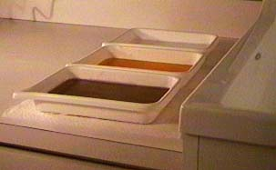

There is a little bit of overkill in this mount given the size of the mounting posts, but the laser should be mounted rigidly to the optical table. The optical tables in 140 SC are stable enough without being air mounted to make satisfactory holograms.

These chemicals are dangerous! Use proper precautions.
Developer in the first tray, bleach in the second, and photoflo in the third. An elevated drain plug in the sink maintains a depth of running water for the washes.
Handle the film with plastic tongs or some similar tool - the chemicals are caustic, especially the bleach. Wear rubber gloves if you must do it by hand.
The entire process of mounting film, exposing the hologram, and developing must be done in almost complete darkness.
In the darkroom with the safelight on, carefully remove one piece of film from the film safe and carefully reclose the safe. The film may be cut to size and then placed on one of the glass plates on some paper towel for padding. Place the other plate on top and carefully squeeze the air out and clamp with the paper clips.